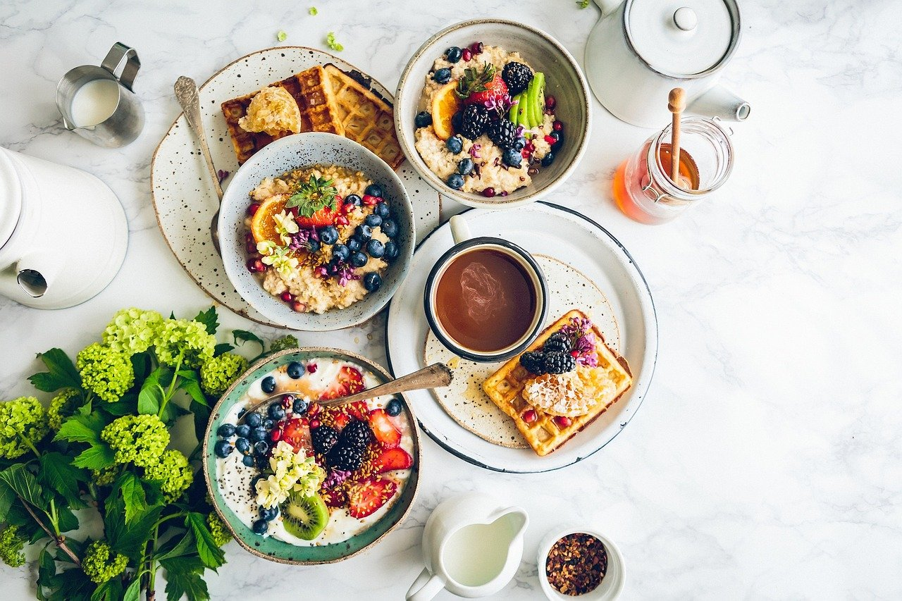
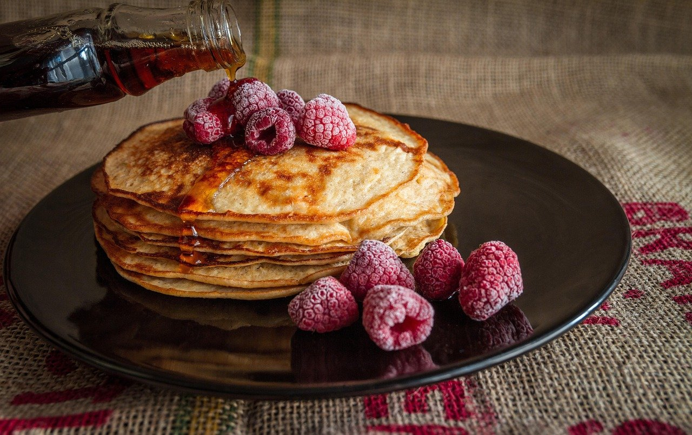
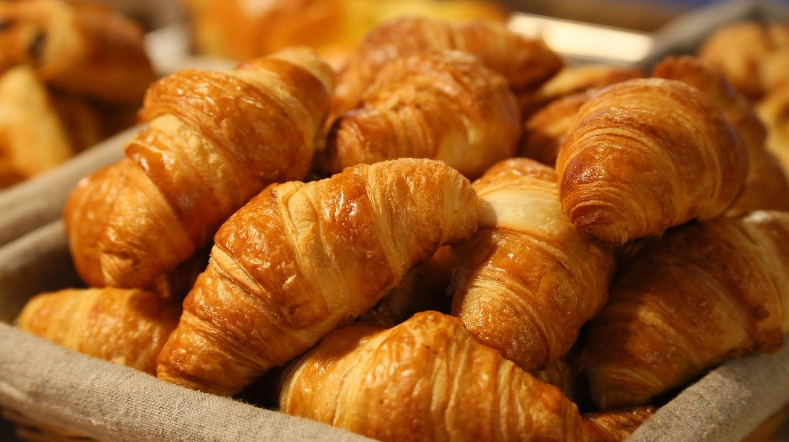

TheNational
Good food from morning to afternoon.
Open every day, 7 am – 4 pm

A relaxed spot on Congress Street
The National is a relaxed restaurant on Congress Street where you can enjoy breakfast, brunch, or lunch. The menu covers hot dishes, snacks and drinks. It is a welcoming place to meet friends or take a midday break.
-
Open daily
Every day from 7 am to 4 pm
-
Casual menu
Examples — to be replaced with your own offers
Options for breakfast, brunch, lunch
-
Downtown spot
Easy to reach on Congress Street
On the table


Come by for breakfast or lunch
98 East Congress StreetTucson, AZ
Open every day, 7 am – 4 pm
Phone: (520) 203-7290